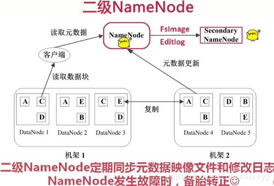
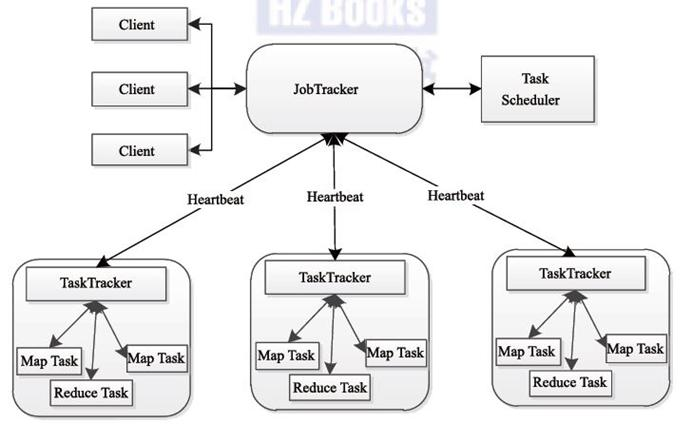
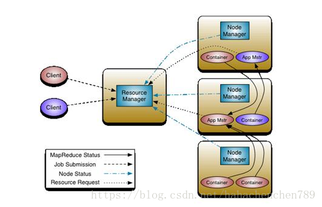

1. 大数据简介
1.1 大数据的由来
x随着计算机技术的发展，互联网的普及，信息的积累已经到了一个非常庞大的地步，信息的增长也在不断的加快，随着互联网、物联网建设的加快，信息更是爆炸式增长，收集、检索、统计这些信息越发困难，必须使用新的技术来解决这些问题
1.2 什么是大数据
x【1】定义大数据指无法在一定时间范围内用常规软件工具进行捕捉、管理和处理的数据集合，需要新处理模式才能具有更强的决策力、洞察发现力和流程优化能力的海量、高增长率和多样化的信息资产【2】总结大数据是指即从各种各样类型的数据中，获得有价值的信息
1.3 大数据特性
x【1】大体量（Volume）数据体量大,一般从TB级别开始计算，可从数百TB到数十数百PB甚至EB的规模KB、MB、GB、TB、PB、EB、... ...1KB = 1024Bytes1MB = 1024K1GB = 1024M1TB = 1024G1PB = 1024T1EB = 1024P... ...【2】多样性（Variety）数据的种类和来源多(多种异构数据源,数据库、爬虫、网络日志......)【3】时效性（Velocity）很多大数据需要在一定的时间限度下得到及时处理【4】准确性（Veracity）处理的结果要保证一定的准确性【5】大价值（Value）大数据包含很多深度的价值，大数据分析挖掘和利用将带来巨大的商业价值【补充】数据的价值密度越来越低,但是这并不意味着想要的数据越来越少,相反我们想要的数据是越来越多，但是样本总量的增长速度是要高于想要的数据的增长速度的
1.4 带来的问题
xxxxxxxxxx【1】数据存储问题 - 存储速度、存储空间【2】数据计算|分析问题 - 性能与效率问题
1.5 大数据与Hadoop
xxxxxxxxxx【1】Hadoop是什么？1.1) Hadoop是一种分析和处理海量数据的软件平台1.2) Hadoop是一款开源软件，使用JAVA开发1.3) Hadoop可以提供一个分布式基础架构
2. Hadoop简介
2.1 Hadoop概述
2.1.1 Hadoop概念
定义
Hadoop是Yahoo!开发，后贡献给了Apache的一套开源的、可靠的、可扩展的用于分布式计算的框架
Hadoop作者
Doug cutting
Hadoop名字由来
以Hadoop作者的孩子的一个棕黄色的大象样子的玩具的命名

2.1.2 Hadoop特点
高可靠性
Hadoop按位存储和数据处理的能力值得信赖
高扩展性
Hadoop通过可用的计算机集群分配数据，完成存储和计算任务，这些集群可以方便地扩展到数以千计的节点中，具有高扩展性
高效性
Hadoop能够在节点之间进行动态地移动数据，并保证各个节点的动态平衡，处理速度非常快，具有高效性
高容错性
Hadoop能够自动保存数据的多个副本（默认是3个），并且能够自动将失败的任务重新分配
2.1.3 Hadoop能做什么
大数据量存储
分布式存储（各种云盘，百度，360~还有云平台均有hadoop应用）
日志处理
搜索引擎
如何存储持续增长的海量网页: 单节点 V.S. 分布式存储
如何对持续增长的海量网页进行排序: 超算 V.S. 分布式计算
数据挖掘
目前比较流行的广告推荐
2.1.4 Hadoop版本
Hadoop1.0
包含Common，HDFS和MapReduce，停止更新
Hadoop2.0
包含了Common，HDFS，MapReduce和YARN。Hadoop2.0和Hadoop1.0完全不兼容。
Hadoop3.0
包含了Common，HDFS，MapReduce，YARN。Hadoop3.0和Hadoop2.0是兼容的
2.2 Hadoop核心组件
2.2.1 HDFS（Hadoop Distributed File System）
HDFS
分布式存储，解决海量数据的存储
HDFS特点及原理
HDFS具有扩展性、容错性、海量数量存储的特点
原理为将大文件切分成指定大小的数据块, 并在分布式的多台机器上保存多个副本
HDFS角色和概念
Client
1.1 切分文件
1.2 与namenode交互获取节点或文件元数据
1.3 与datanode交互写入或读取数据
Namenode（master节点）
2.1 存入文件元数据信息
2.2 配置副本策略
2.3 处理客户端的所有请求(读和写)
Secondarynode
3.1 定期同步NameNode的元数据和日志信息，紧急情况下，可转正
Datanode（slave）
4.1 存储具体数据
4.2 汇报存储信息给namenode
Block
每块默认128MB大小
每块可以多个副本
HDFS示意图

HDFS原理图
1、每个数据块3个副本，分布在两个机架内的节点，2个副本在同一个机架上，另外一个副本在另外的机架上

2、心跳检测，datanode定期向namenode发送心跳消息。查看是否有datanode挂掉了

3、secondary namenode;定期同步元数据映像文件和修改日志，namenode发生故障，secondaryname会成为主namenode

HDFS写文件流程
x
【1】客户端将文件拆分成固定大小128M的块，并通知namenode【2】namenode找到可用的datanode返回给客户端【3】客户端根据返回的datanode，对块进行写入【4】通过流水线管道流水线复制【5】更新元数据，告诉namenode已经完成了创建新的数据块，保证namenode中的元数据都是最新的状态
HDFS读文件流程
xxxxxxxxxx【1】客户端向namenode发起读请求，把文件名，路径告诉namenode【2】namenode查询元数据，并把数据返回客户端【3】此时客户端就明白文件包含哪些块，这些块在哪些datanode中可以找到
2.2.2 MapReduce
MapReduce实现了分布式计算
Hadoop的MapReduce是对google三大论文的MapReduce的开源实现，实际上是一种编程模型，是一个分布式的计算框架，用于处理海量数据的运算，由JAVA实现
MapReduce原理图

MapReduce角色及概念
JobTracker
–Master节点只有一个
–管理所有作业/任务的监控、错误处理等
–将任务分解成一系列任务，并分派给TaskTracker
TaskTracker
–Slave节点，一般是多台
–运行Map Task和Reduce Task
–并与JobTracker交互，汇报任务状态
Map Task
–解析每条数据记录，传递给用户编写的map()并执行，将结果输出
Reducer Task
–从Map Task的执行结果中，远程读取输入数据，对数据进行排序，将数据按照分组传递给用户编写的reduce函数执行
2.2.3 Yarn
作用
负责整个集群资源的管理和调度，是Hadoop的一个通用的资源管理系统
定义
Apache Hadoop YARN （Yet Another Resource Negotiator，另一种资源协调者）是一种新的 Hadoop 资源管理器，它是一个通用资源管理系统，可为上层应用提供统一的资源管理和调度，它的引入为集群在利用率、资源统一管理和数据共享等方面带来了巨大好处
原理图

Yarn角色及概念
Resourcemanager
–处理客户端请求
–启动/监控ApplicationMaster
–监控NodeManager
–资源分配与调度
Nodemanager
–单个节点上的资源管理
–处理来自ResourceManager的命令
–处理来自ApplicationMaster的命令
ApplicationMaster
–为应用程序申请资源，并分配给内部任务
–任务监控与容错
Container
–对任务运⾏行环境的抽象，封装了CPU 、内存等
Client
–用户与Yarn交互的客户端程序
–提交应用程序、监控应用程序状态，杀死应用程序等
2.3 Hadoop总结
2.3.1 Hadoop组成
- 分布式存储 - HDFS
- 分布式计算 - MapReduce+Yarn
2.3.2 HDFS特点
HDFS优点
- 高可靠性
- 高扩展性
- 高效性
- 高容错性
- 低成本 ：与一体机、商用数据仓库等相比，hadoop是开源的，项目的软件成本因此会大大降低
HDFS缺点
- 不能做到低延迟，对于低延迟数据访问，不适合hadoop
- 不适合大量小文件存储，由于namenode将文件系统的元数据存储在内存中，因此该文件系统所能存储的文件总数受限于namenode的内存容量，根据经验，每个文件、目录和数据块的存储信息大约占150字节
- 对于上传到HDFS上的文件，不支持修改文件，HDFS适合一次写入，多次读取的场景
2.3.3 HDFS相关
名词
- NameNode
- DataNode
写入文件流程
- 客户端将文件拆分成固定大小128M的块，并通知namenode
- namenode找到可用的datanode返回给客户端
- 客户端根据返回的datanode，对块进行写入
- 通过流水线管道流水线复制
- 更新元数据，告诉namenode已经完成了创建新的数据块，保证namenode中的元数据都是最新的状态
读取文件流程
- 客户端向namenode发起独立请求，把文件名，路径告诉namenode
- namenode查询元数据，并把数据返回客户端
- 此时客户端就明白文件包含哪些块，这些块在哪些datanode中可以找到
3. 环境安装
3.1 安装方式
单机模式
只能启动MapReduce
伪分布式
能启动HDFS、MapReduce 和 YARN的大部分功能
完全分布式
能启动Hadoop的所有功能
3.2 安装JDK
3.2.1 JDK安装步骤
下载JDK安装包（下载Linux系统的 .tar.gz 的安装包）
https://www.oracle.com/java/technologies/javase/javase-jdk8-downloads.html
更新Ubuntu源
sudo apt-get update
将JDK压缩包解压到Ubuntu系统中 /usr/local/ 中
sudo tar -zxvf jdk-8u251-linux-x64.tar.gz -C /usr/local/
将解压的文件夹重命名为 jdk8
cd /usr/local/
sudo mv jdk1.8.0_251/ jdk8
添加到环境变量
cd /home/tarena/
sudo gedit .bashrc
在文件末尾添加如下内容:
x
export JAVA_HOME=/usr/local/jdk8export JRE_HOME=$JAVA_HOME/jreexport CLASSPATH=.:$JAVA_HOME/lib:$JRE_HOME/libexport PATH=.:$JAVA_HOME/bin:$PATHsource .bashrc
验证是否安装成功
java -version
<出现java的版本则证明安装并添加到环境变量成功 java version "1.8.0_251">
3.3 安装Hadoop并配置伪分布式
3.3.1 Hadoop安装配置步骤
安装SSH
sudo apt-get install ssh
配置免登录认证,避免使用Hadoop时的权限问题
ssh-keygen -t rsa （输入此条命令后一路回车）
cd ~/.ssh
cat id_rsa.pub >> authorized_keys
ssh localhost （发现并未让输入密码即可连接）
exit （退出远程连接状态）
下载Hadoop 2.10（374M）
https://archive.apache.org/dist/hadoop/common/hadoop-2.10.0/hadoop-2.10.0.tar.gz
解压到 /usr/local 目录中,并将文件夹重命名为 hadoop，最后设置权限
sudo tar -zxvf hadoop-2.10.0.tar.gz -C /usr/local/
cd /usr/local
sudo mv hadoop-2.10.0/ hadoop2.10
sudo chown -R tarena hadoop2.10/
验证Hadoop
cd /usr/local/hadoop2.10/bin
./hadoop version （此处出现hadoop的版本）
设置JAVE_HOME环境变量
sudo gedit /usr/local/hadoop2.10/etc/hadoop/hadoop-env.sh
把原来的export JAVA_HOME=${JAVA_HOME}改为 export JAVA_HOME=/usr/local/jdk8
设置Hadoop环境变量
sudo gedit /home/tarena/.bashrc
在末尾追加
xxxxxxxxxxexport HADOOP_HOME=/usr/local/hadoop2.10export CLASSPATH=.:{JAVA_HOME}/lib:${HADOOP_HOME}/sbin:$PATHexport PATH=.:${HADOOP_HOME}/bin:${HADOOP_HOME}/sbin:$PATHsource /home/tarena/.bashrc
伪分布式配置，修改2个配置文件（core-site.xml 和 hdfs-site.xml）
修改core-site.xml
sudo gedit /usr/local/hadoop2.10/etc/hadoop/core-site.xml
添加如下内容
x
<configuration><property><!--数据目录配置参数--><name>hadoop.tmp.dir</name><value>file:/usr/local/hadoop2.10/tmp</value></property><property><!--文件系统配置参数--><name>fs.defaultFS</name><value>hdfs://localhost:9000</value></property></configuration>修改hdfs-site.xml
sudo gedit /usr/local/hadoop2.10/etc/hadoop/hdfs-site.xml
添加如下内容
x
<configuration><property><!--副本数量--><name>dfs.replication</name><value>1</value></property><property><!--namenode数据目录--><name>dfs.namenode.name.dir</name><value>file:/usr/local/hadoop2.10/tmp/dfs/name</value></property><property><!--datanode数据目录--><name>dfs.datanode.data.dir</name><value>file:/usr/local/hadoop2.10/tmp/dfs/data</value></property></configuration>配置YARN - 1
cd /usr/local/hadoop2.10/etc/hadoop
cp mapred-site.xml.template mapred-site.xml
sudo gedit mapred-site.xml
添加如下配置
xxxxxxxxxx<property><name>mapreduce.framework.name</name><value>yarn</value></property>配置YARN - 2
sudo gedit yarn-site.xml
添加如下配置：
x
<property><name>yarn.nodemanager.aux-services</name><value>mapreduce_shuffle</value></property>执行NameNode格式化
cd /usr/local/hadoop2.10/bin
./hdfs namenode -format
出现 Storage directory /usr/local/hadoop2.10/tmp/dfs/name has been successfully formatted 则表示格式化成功
启动Hadoop所有组件
cd /usr/local/hadoop2.10/sbin
./start-all.sh
启动时可能会出现警告，直接忽略即可，不影响正常使用
启动成功后，可访问Web页面查看 NameNode 和 Datanode 信息，还可以在线查看 HDFS 中的文件
查看Hadoop相关组件进程
jps
会发现如下进程
x
NameNodeDataNodeSecondaryNameNodeResourceManagerNodeManager测试 - 将本地文件上传至hdfs
hadoop fs -put 一个本地的任意文件 /
hadoop fs -ls /
也可以在浏览器中Utilities->Browse the file system查看
4. HDFS Shell操作
4.1 命令格式
hadoop fs -命令
4.2 常用命令汇总
查看HDFS系统目录（ls）
命令格式 ：hadoop fs -ls 路径
示例 ：hadoop fs -ls /
创建文件夹（mkdir）
命令格式1 ：hadoop fs -mkdir 绝对路径
命令格式2 ：hadoop fs -mkdir -p 绝对路径 （可递归创建文件夹）
示例1 ：hadoop fs -mkdir /test
示例2 ：hadoop fs -mkdir -p /test/stu
上传文件（put）
命令格式 ：hadoop fs -put 本地文件 HDFS目录
示例 ：hadoop fs -put words.txt /test/
下载文件（get）
命令格式 ：hadoop fs -get HDFS文件 本地目录
示例 ：hadoop fs -get /test/words.txt /home/tarena/
删除文件或目录（rm）
命令格式1 ：hadoop fs -rm 文件或目录的绝对路径
命令格式2 ：hadoop fs -rm -r 目录 （删除文件夹要加 -r 选项）
示例1 ：hadoop fs -rm /test/words.txt
示例2 ：hadoop fs -rm -r /test
查看文件内容（text）
命令格式 ：haddop fs -text 文件绝对路径
示例 ：hadoop fs -text /test/words.txt
移动（mv）
命令格式 ：hadoop fs -mv 源文件 目标目录
示例 ：hadoop fs -mv /test/words.txt /words.txt
复制（cp）
命令格式 ：hadoop fs -cp 源文件 目标目录
示例 ：hadoop fs -cp /test/words.txt /words.txt
4.3 HDFS Shell操作练习
在本地 /home/tarena/ 下新建 students.txt
touch /home/tarena/students.txt
在students.txt中任意添加内容
Twink Twink little star
How I wonder what you are
在HDFS中创建 /studir/stuinfo/ 目录
hadoop fs -mkdir -p /studir/stuinfo/
将本地students.txt文件上传到HDFS中
hadoop fs -put /home/tarena/students.txt /studir/stuinfo/
查看HDFS中 /studir/stuinfo/students.txt 的内容
hadoop fs -text /studir/stuinfo/students.txt
删除HDFS中的 /studir 目录
hadoop fs -rm -r /studir